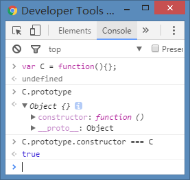

对js对象创建、原型、原形链、继承及”类”的理解，由于其间各种复杂的关系及掌握程度不够，个人经常需要翻资料确认，于是找时间整理了下当时的理解，并以此文形式记录下来。
面向对象
oop，面向对象编程。主要有以下几大特征:
- 类，具有相同结构和行为的集合。
- 封装，将操作封闭，对外提供接口供使用。
- 继承，子类具有基类(父类)的特征，还可以有自己的新的特性。
- 多态，一个功能可以有多种不同用法，或者说一个子类可以将父类某个属性替换，具体的包括重写(override, 方法名称与参数相同)和重载(overload, 方法名称相同，参数不同)。
JavaScript对象
js对象，除“null”外，其他的可以看做是属性的无序集合，每个属性都是一个名/值对，且其拥有一个连接到原型对象的隐藏连接。“null”可以理解成不是对象的对象。函数，也是对象。js对象是动态的，可以新增和删除属性，通过引用而非值来操作对象。每个属性还有与之相关的一些其他值，称为“属性特性(property attribute)”:
- 可写(writable attribute)，表明是否可以设置该属性的值；
- 可枚举(enumerable attribute)，表明是否可以通过for/in循环返回该属性；
- 可配置(configurable attribute)，表明是否可以删除或修改该属性。
这三个特性是在ES5之后可以加以配置，在ES5之前，通过代码给对象创建的属性都是可写的、可枚举的和可配置的。除了包含属性之外，每个对象还拥有三个相关的对象特性(object attribute):
- 对象的原型(prototype)指向另外一个对象，本对象的属性继承自它的原型对象；
- 对象的类(class)是一个标识对象类型的字符串；
- 对象的扩展标记(extensible flag)指明了是否可以向该对象添加新属性。
js对象的属性包括两类：自有属性(own property)及继承属性(inherited property)。
原型
原型是对象的内部属性，可以将其理解为指向构造函数原型对象的内部指针，默认不可访问，部分浏览器实现可以通过.__proto__访问(eg.Chrome)，我们可以结合.__proto__来加深理解。
先说我知道的几个没有原型的对象：
null没有原型；Object.prototype没有原型(或者说原型为null)。
然后介绍几种获取对象的原型属性的方法：
- 所有通过对象直接量创建的对象都具有同一个原型对象—
Object.prototype； - 通过关键字new和构造函数调用创建的对象，它的原型就是构造函数的prototype属性的值。即，通过new Date()创建的对象，其原型就是Date.prototype；
- 通过Object.create()创建的对象使用第一个参数(可以是null)作为它们的原型；
每个函数对象在创建时会带有一个prototype属性，它的值是一个拥有constructor属性且值即为该函数本身的对象。
当一个函数对象被创建时，Function构造器产生的函数对象会运行类似下面的代码：1
this.prototype = {constructor:this, __proto__:...};
新函数对象被赋予一个prototype属性，其值包含一个constructor属性且属性值为该新函数对象本身。
var C = function(){
this.key = 'key';
};
C.prototype.constructor === C; // true

上面的概念说完了，可以利用chrome的console面板，通过以下代码加深理解：
null.__proto__ // Uncaught TypeError: Cannot read property '__proto__' of null
Object.prototype.__proto__ // null
var o = {};
o.__proto__ === Object.prototype // true
var A = function(){};
A.__proto__ === Function.prototype // true
A.prototype.constructor === A // true
A.prototype.__proto__ === Object.prototype // true
var a = new A();
a.__proto__ === A.prototype // true
var b = Object.create(A);
var c = Object.create(A.prototype);
var empty = Object.create(null);
b.__proto__ === A // true 注意此处，对象b的原型为A
c.__proto__ === A.prototype // true 注意此处，对象c的原型为A.prototype
empty.__proto__ // undefined 注意跟上面对象o的区别
原形链
如上面所述，几乎每个对象都有原型(__proto__)。如果其原型不为null，且是以构造函数形式创建的对象，其原型指向该构造函数的prototype属性。该构造函数的prototype属性也有原型(__proto__)，如果不为null，则接着往上引用，直到原型为null。如下代码所示：
var A = function(){};
var a = new A();
a.__proto__ === A.prototype; // true
A.prototype.__proto__ === Object.prototype; // true
Object.prototype.__proto__ === null; // true
像上面这样通过`原型(__proto__)`一直往上可以串联起来就是原型链。
创建对象
可以通过对象字面量、new及(ES5)Object.create()方法来创建对象。 + 对象字面量创建方式很简单，`var a = {}`； + 通过关键字`new`创建，也可以叫做通过`构造函数`创建，比如：`var date = new Date()`； + 通过ES5新提供的方法，`Object.create()`创建。其接收两个参数，第一个参数是当前要创建对象的原型，第二个参数表示当前要创建对象的特性约束，即是否可写、可配置等。下面代码简单介绍下使用及细节：
var a = Object.create(null);
a.__proto__ // undefined 此时a是一个连原型都没有的空对象
var b = Object.create({});
b.__proto__ // Object {}, b是一个普通的空对象，其有原型，指向空的Object`{}`
var c = Object.create(Object.prototype);
c.__proto__ === Object.prototype // true
上面介绍的是创建对象的最基础方法，这里稍微扩展一些，介绍几种关于创建对象的设计模式：
- 工厂模式，此模式抽象了创建具体对象的过程，用函数来封装以特定接口创建对象的细节，如下所示：
function create(name,age){ var o = new Object(); o.name = name; o.age = age; return o; } var p1 = create('li',20); var p2 = create('wu',30); - 构造函数模式，上面已经涉及，平常也经常用到，不举例子了；
- 原型模式，此方式将属性写在构造函数的
prototype上面，实用性不强，一般不用； - 原型模式与构造函数组合使用，此模式将共享的属性和方法写在
prototype上，构造函数里面用于自定义属性，比较通用。 - …
继承
js实现继承的方式很多，下面我介绍的只是用的比较多的一种，可以叫做：组合继承。其将原形链和借用构造函数技术组合到一块，发挥各自的长处实现的一种继承模式。
其背后的思路是使用原形链实现对原型属性和方法的继承，而通过借用构造函数来实现对实例属性的继承，如下面例子：
function Man(name){
this.name = name;
this.sex = 'male';
}
Man.prototype.myName = function(){
console.log(this.name);
};
function Son(name,age){
// 继承属性
Man.call(this,name);
this.age = age;
}
Son.prototype = Object.create(Man.prototype);
Son.prototype.myAge = function(){
console.log(this.age);
}
Son.prototype.constructor = Son; // 由于上面更改了Son.prototype的值，将其中的constructor值也改变了，因此此处必须将其写回
var li = new Son('li',20);
li.myName(); // li
li.myAge(); // 20
li.sex; // male
最后
继承、创建对象，还有其他的一些形式，目前我不大常用，所以没有在上文提及，有兴趣的可以自行了解。
参考资料
《JavaScript语言精粹》
《JavaScript权威指南(第6版)》
《JavaScript高级程序设计(第2版)》等
 ☜☜☜ wechat 『『『 reward 点击扫码打赏 ~~~ ^_^ 』』』alipay ☞☞☞
☜☜☜ wechat 『『『 reward 点击扫码打赏 ~~~ ^_^ 』』』alipay ☞☞☞